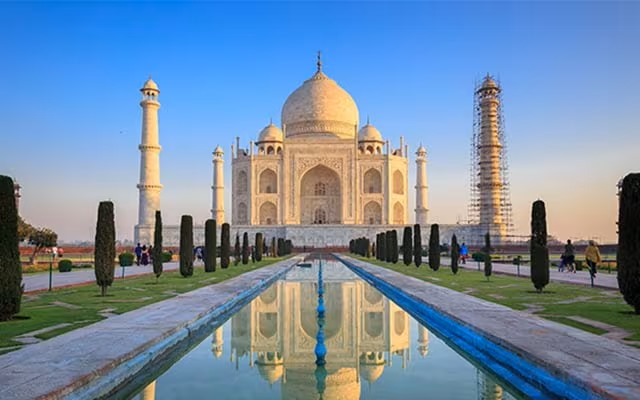

Taj Mahal, mausoleum complex in Agra, western Uttar Pradesh state, northern India. The Taj Mahal was built by the Mughal emperor Shah Jahān (reigned 1628–58) to immortalize his wife Mumtaz Mahal (“Chosen One of the Palace”), who died in childbirth in 1631, having been the emperor’s inseparable companion since their marriage in 1612. India’s most famous and widely recognized building, it is situated in the eastern part of the city on the southern (right) bank of the Yamuna (Jumna) River. Agra Fort (Red Fort), also on the right bank of the Yamuna, is about 1 mile (1.6 km) west of the Taj Mahal.
Did You Know?
The Taj Mahal is one of the new Seven Wonders of the World. What are the other six?
In its harmonious proportions and its fluid incorporation of decorative elements, the Taj Mahal is distinguished as the finest example of Mughal architecture, a blend of Indian, Persian, and Islamic styles. Other attractions include twin mosque buildings (placed symmetrically on either side of the mausoleum), lovely gardens, and a museum. One of the most beautiful structural compositions in the world, the Taj Mahal is also one of the world’s most iconic monuments, visited by millions of tourists each year. The complex was designated a UNESCO World Heritage site in 1983.
If You'd Only Be My Valentine, American Valentine card, 1910. Cupid gathers a basket of red hearts from a pine tree which, in the language of flowers represents daring. Valentine's Day St. Valentine's Day February 14 love romance history and society heart In Roman mythology Cupid was the son of Venus, goddess of love (Eros and Aphrodite in the Greek Pantheon).

History of construction
Contemporary portrait of the fifth Mughal emperor, Shah Jahān (reigned 1628–58).Taj Mahal mausoleum and mosqueRed sandstone mosque (left, west) and white marble mausoleum, in the Taj Mahal complex, Agra, Uttar Pradesh, India.
Discover the story behind Shah Jahān's decision to build the Taj Mahal mausoleum for his wife Mumtaz Maḥal Learn why Mughal emperor Shah Jahān decided to build the Taj Mahal.
See all videos for this article. The plans for the complex have been attributed to various architects of the period, though the chief architect was probably Ustad Aḥmad Lahawrī, an Indian of Persian descent. The five principal elements of the complex—main gateway, garden, mosque, jawāb (literally “answer”; a building mirroring the mosque), and mausoleum (including its four minarets)—were conceived and designed as a unified entity according to the tenets of Mughal building practice, which allowed no subsequent addition or alteration. Building commenced about 1632. More than 20,000 workers were employed from India, Persia, the Ottoman Empire, and Europe to complete the mausoleum itself by about 1638–39; the adjunct buildings were finished by 1643, and decoration work continued until at least 1647. In total, construction of the 42-acre (17-hectare) complex spanned 22 years.
A tradition relates that Shah Jahān originally intended to build another mausoleum across the river to house his own remains. That structure was to have been constructed of black marble, and it was to have been connected by a bridge to the Taj Mahal. He was deposed in 1658 by his son Aurangzeb, however, and was imprisoned for the rest of his life in Agra Fort.
Golden Temple, the chief gurdwara, or house of worship, of Sikhism and the Sikhs’ most important pilgrimage site. It is located in the city of Amritsar, Punjab state, northwestern India.
The Golden Temple, or Harmandir Sahib, is the focus of a complex of buildings that form the heart of Sikhism. The temple itself occupies a small island in the center of a tank, or pool, called the Amrita Saras (“Pool of Nectar”)—the source of the city’s name and is connected to land on its west side by a marble causeway running across the pool. Situated facing the entrance to the causeway is the Akal Takht (“Throne of the Timeless One”), the chief center of authority of Sikhism and the headquarters of the Shiromani Akali Dal (Supreme Akali Party), the main political party of the Sikhs in Punjab. On the north side of the tank is the main entrance to the complex and the Teja Singh Samudri Hall (Clock Tower), which houses the main offices of the Shiromani Gurdwara Parbandhak Committee (Supreme Committee of Temple Management), which oversees the main Sikh gurdwaras. Among several buildings on the east side of the tank are the Assembly Hall and the Guru Ram Das Langar, the latter a large dining hall that serves meals to thousands of pilgrims and other visitors each day.
The Hawa Mahal is a palace in the city of Jaipur, Rajasthan, India. Built from red and pink sandstone, it is on the edge of the City Palace, Jaipur, and extends to the Zenana, or women's chambers. The structure was built in 1799 by the Maharaja Sawai Pratap Singh, grandson of Maharaja Sawai Jai Singh, the founder of the city of Jhunjhunu in the state of Rajasthan.He was so inspired by the unique structure of Khetri Mahal that he built this grand and historical palace. It was designed by Lal Chand Ustad. Its five-floor exterior is akin to a honeycomb with its 953 small windows called Jharokhas decorated with intricate latticework. The original intent of the lattice design was to allow royal ladies to observe everyday life and festivals celebrated in the street below without being seen. This architectural feature also allowed cool air from the Venturi effect to pass through, thus making the whole area more pleasant during the high temperatures in summer. Many people see the Hawa Mahal from the street view and think it is the front of the palace, but it is the back. In 2006, renovation works on the Mahal were undertaken, after a gap of 50 years, to give a facelift to the monument at an estimated cost of Rs 4.568 million.The corporate sector lent a hand to preserve the historical monuments of Jaipur and the Unit Trust of India has adopted Hawa Mahal to maintain it.The palace is an extended part of a huge complex. The stone-carved screens, small casements, and arched roofs are some of the features of this popular tourist spot. The monument also has delicately modelled hanging cornices.
click here for related video